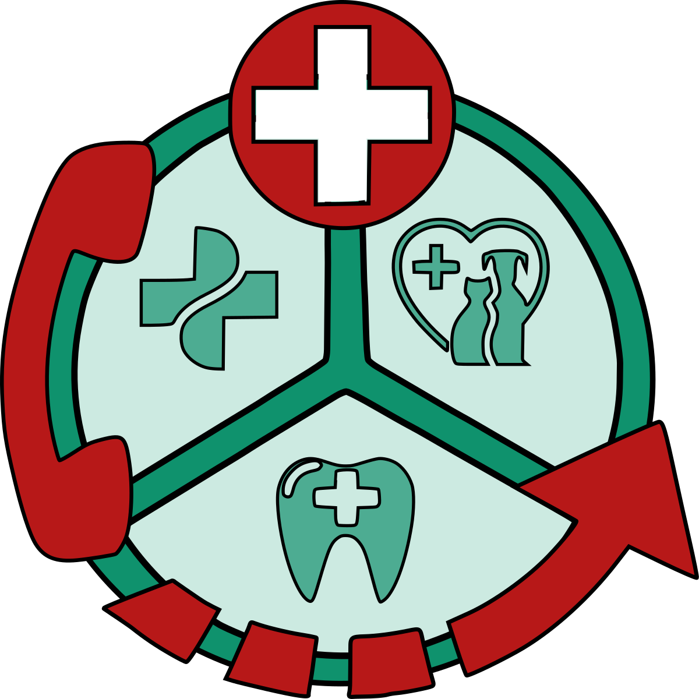

Get Help in a few Clicks
Emergency Wiki was my final group project I participated in during my time Le Wagon. My fellow team members on this project were Daniella Zimmerman, Yohann Paulin, and Bruno da Silva.
I personally worked on both the frontend and backend in this project. It was important to me to continue touching on everything I learned during the 9 week boot camp. I specifically worked on the landing page, did the CSS animations, created the home page search bar functionality with autofill, configured the call now button, and made cards and grid that display the various doctors and locations.